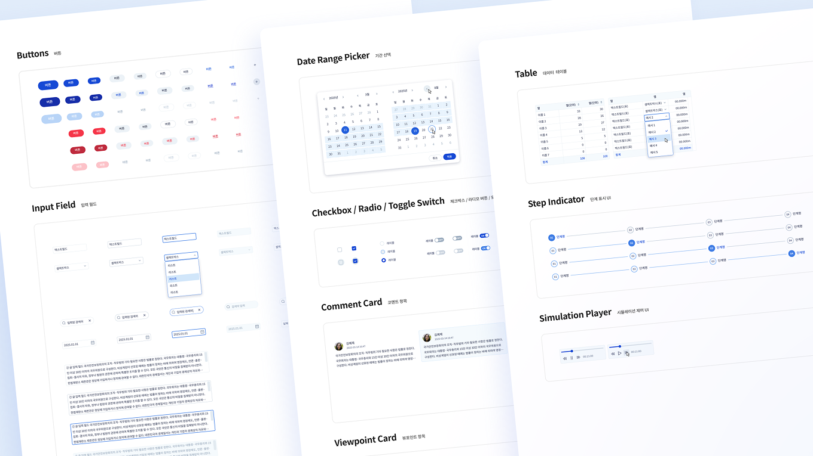
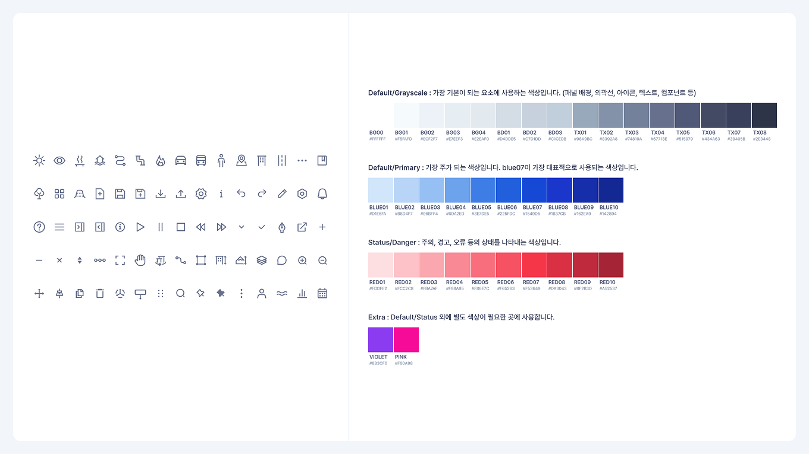
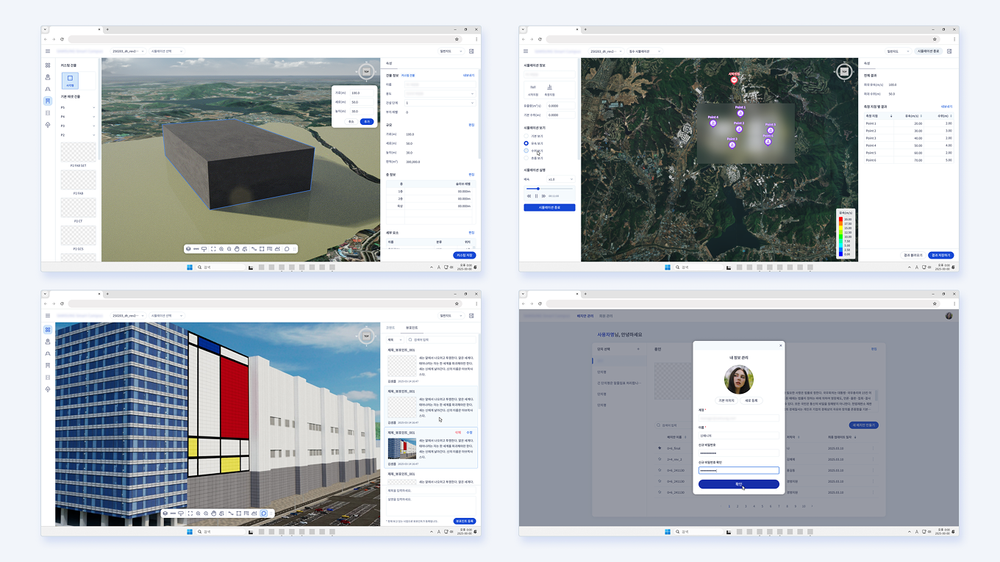

대규모 산업 시설
통합 관리 솔루션
기류, 조망, 뷰 등 다양한 환경 요소를 검토하고 설계 대안을 편집·비교할 수 있는 통합관리 솔루션의 UI·UX 디자인을 담당했습니다. 시뮬레이션 결과를 비전문가도 쉽게 이해할 수 있도록 직관적으로 전달하는 데 중점을 두었고, 정량·정성 기준에 따른 대안 비교와 공사 이슈 예측 등 주요 기능이 사용 흐름 안에서 자연스럽게 전달될 수 있도록 화면과 정보 구조를 설계했습니다.
기획자, 개발자와 긴밀히 협업하며 구현 가능성을 함께 검토했고, 고객사와의 정기적인 화상회의를 통해 피드백을 반영하며 UI를 지속적으로 개선해 나갔습니다. 다양한 직군 간 원활한 소통을 위해 명확하고 간결한 인터페이스 설계에도 집중했습니다.

초기 단계에서 디자인 시스템을 직접 구축하고, 컴포넌트 기반으로 UI를 설계했습니다. 공통 요소를 컴포넌트화해 반복 작업을 줄이고 작업 효율을 높일 수 있었으며, 전체 화면의 일관성도 안정적으로 유지할 수 있었습니다.
프로젝트 초기에 색상 콘셉트가 변경된 적이 있었는데, 컴포넌트 단위로 설계된 덕분에 무분별한 수정 없이 체계적으로 대응할 수 있었고 작업 시간도 크게 단축할 수 있었습니다.

